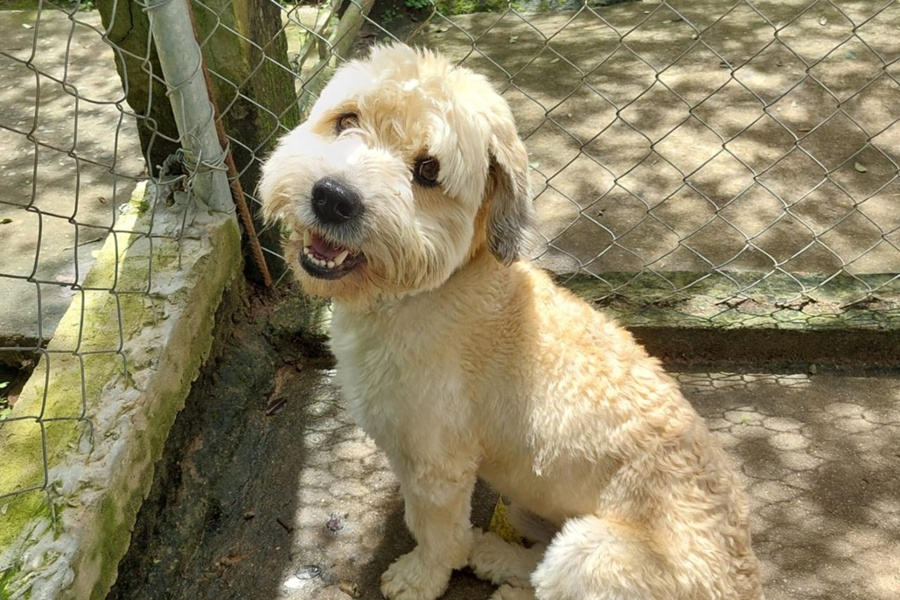
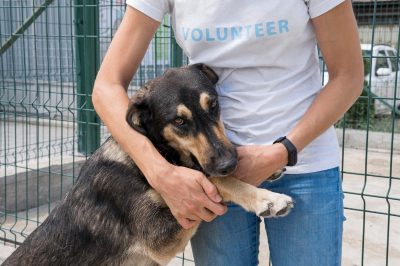
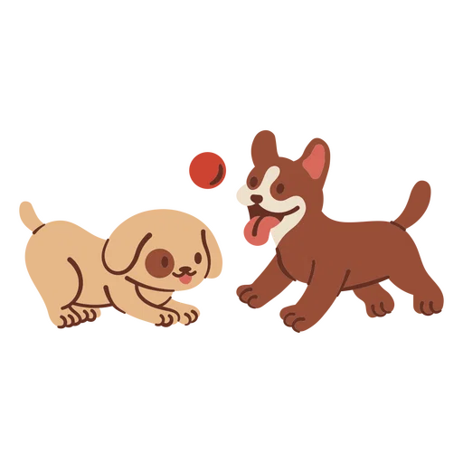

Roupas que aquecem quem mais precisa.
A VestPet produz e arrecada roupas para animais resgatados, protegendo cães e gatos do frio com carinho costurado à mão.
- 2.480
- peças doadas
- 37
- abrigos parceiros
- 190+
- voluntários

Como funcionamos
Conectamos quem quer ajudar a quem precisa de calor. Tudo de forma transparente e cheia de afeto.
Produção artesanal
Voluntários costuram, tricotam e adaptam roupas pensadas para o corpo de cães e gatos.
Arrecadação
Recebemos doações de roupas, cobertores, tecidos e contribuições financeiras.
Distribuição
Entregamos as peças a abrigos, protetores independentes e animais em situação de rua.

Cada ponto é um abraço.
Desde então, a VestPet reúne voluntários de todo o Brasil em mutirões de costura e tricô. Cada peça é feita pensando no conforto, na segurança e no aconchego dos animais que passaram por situações de abandono.
Conheça nossa história →Ajude a aquecer mais um animal hoje.
R$ 25 já produzem um suéter completo para um cão de pequeno porte. Toda contribuição é convertida diretamente em proteção.
Fazer uma doação